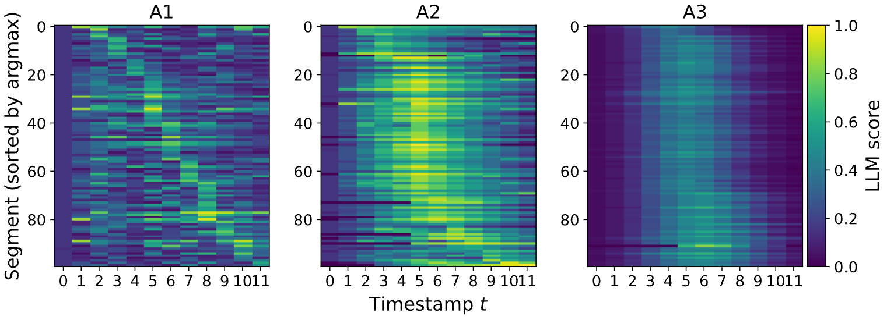
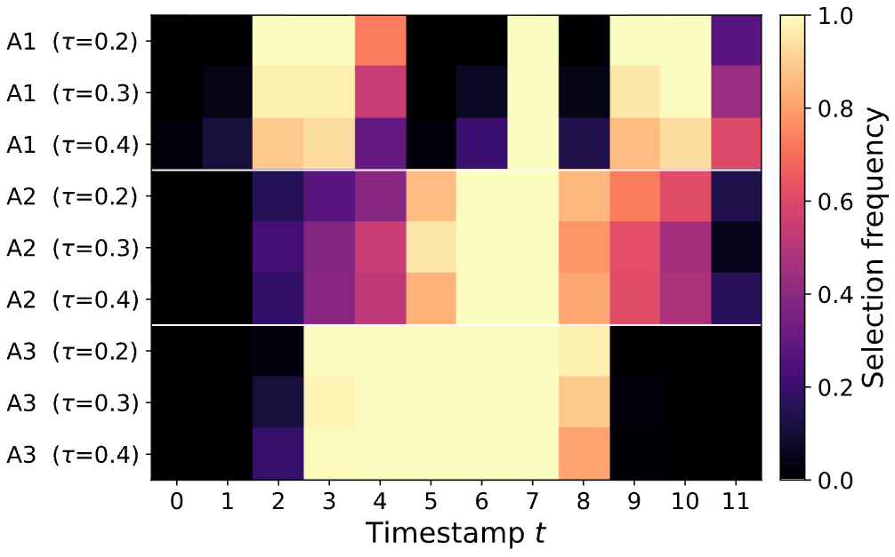
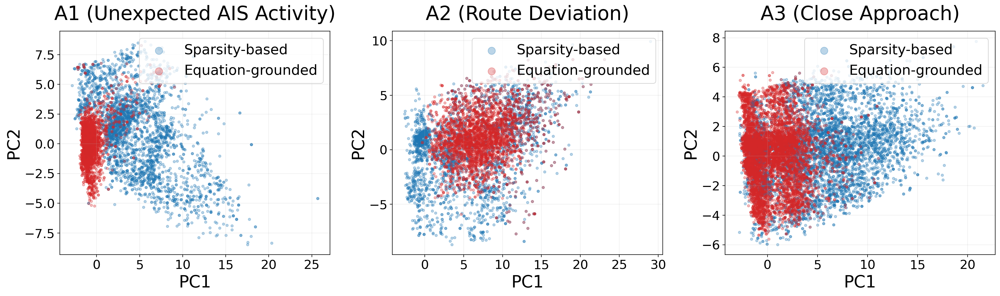

Maritime anomaly detection is essential for ensuring maritime safety, security, and efficient traffic management at sea, with Automatic Identification System (AIS) data serving as a primary data source. Despite its importance, most publicly available AIS datasets lack predefined anomaly labels, forcing prior studies to rely on either distribution-based rarity or domain rule/expert-assisted labeling. These approaches, however, face fundamental limitations: statistical rarity often fails to reflect practically critical events, while expert-based labeling is costly, subjective, and difficult to scale. Moreover, both paradigms tend to overlook interaction-driven hazards such as near-miss approaches between vessels. To address these challenges, we propose an equation-grounded anomaly taxonomy that is implementable under a limited AIS observation schema and extensible to other AIS datasets. Specifically, the taxonomy defines three anomaly types: unexpected AIS activity (A1), route deviation (A2), and close approach (A3), covering both single-vessel and inter-vessel anomalies. Building on this taxonomy, we introduce a unified score--synthesize--label pipeline that produces LLM-guided plausibility scores, uses them to synthesize anomalies, and assigns timestamp-level labels. To rigorously assess detection performance, we further design benchmark evaluation settings that account for variations in temporal-window length and anomaly-type composition, and evaluate a broad range of time-series models and anomaly detection models. Together, these contributions provide a systematic basis for evaluating maritime anomaly detection methods across different anomaly types.
We distinguish anomalies into single-vessel and inter-vessel categories and propose an equation-grounded taxonomy that is operationalizable under a limited AIS schema. We further employ an LLM as a constrained scoring module to generate context-conditioned plausibility scores, which in turn manage the placement and magnitude of synthesized anomalies. Anomalies are synthesized and labeled via an equation-grounded synthesizer.



We verify that the LLM scorer produces anomaly-type-aware guidance
rather than assigning high scores to fixed timestamp positions.
Across diverse experimental settings and baseline models, we find that performance is largely determined by how well a model’s assumptions align with anomaly-specific cues, underscoring the advantage of domain-defined, equation-grounded supervision over sparsity-based labeling.
@inproceedings{[PLACEHOLDER:citekey],
title = {[PLACEHOLDER: Paper Title]},
author = {[PLACEHOLDER: Author One and Author Two and Author Three]},
booktitle = {[PLACEHOLDER: Venue, e.g. Proceedings of the 32nd ACM SIGKDD Conference on Knowledge Discovery and Data Mining (KDD)]},
year = {[PLACEHOLDER: 2026]}
}